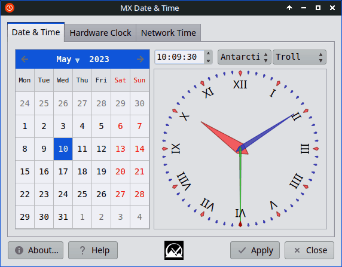
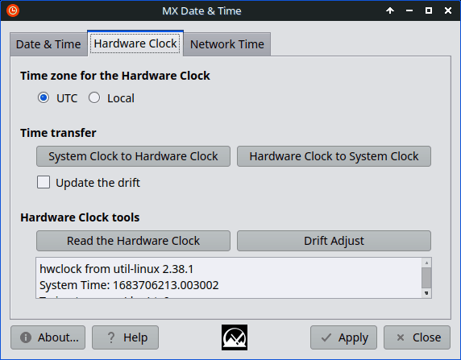
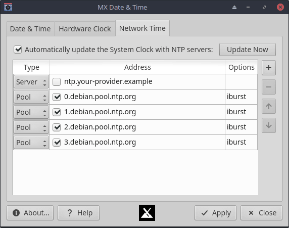

This application provides access to common settings and tools to make managing the system date and time easy.
The settings on this tab control the date, time and zone of the system clock.

When selecting a different time zone, the calendar and clock controls will reflect the change. The system clock will not be altered until Apply is pressed.
The hardware clock, also known as a realtime clock (RTC), keeps track of the time when the system is off. When the system is booted, the time is read from the Hardware Clock.

The Time zone for the Hardware Clock determines whether the hardware clock is set according to UTC or the Local time zone. UTC is recommended, unless the system is also used with an operating system that requires the hardware clock time set to the local time zone.
The buttons in the Time transfer section copy the system clock time across to the hardware clock, and vice versa.
If Update the drift is selected when copying from System Clock to Hardware Clock, the drift factor for the hardware clock is updated. It is automatically unselected once the operation is complete, and should not be selected again for at least 4 hours from the last drift update.
The Hardware Clock tools can be used to tune and maintain the hardware clock:
The output from these tools will be placed in the text box under the buttons.
The recommended method for correctly changing the time zone for the hardware clock, is to press Apply immediately after selecting the time zone (UTC or Local). Check the contents of the text box in Hardware Clock tools to ensure everything is correct. If the time is different, the hardware clock may have been adjusted for the change in time zone.
If the new time is incorrect, set the system clock to the correct time. You can use Update Now in the Network Time tab for this. Once the system clock is set correctly, press System Clock to Hardware Clock.
For a useful drift factor to be calculated, first go to Network Time and update the system clock using NTP. Then with Update the drift selected, press System Clock to Hardware Clock. Perform these steps again after at least 4 hours.
Tip: The longer the time between drift calculations, the more precise the drift factor will be.
The system clock can be maintained with the help of other systems that communicate using the Network Time Protocol (NTP). The settings on this tab control how the NTP client service behaves.

When Automatically update the System Clock with NTP servers is selected, the NTP servers that are on the list will be periodically checked and, if necessary, the system time will be adjusted. The Update Now button can be used to manually adjust the system clock in line with the configured time sources.
The NTP list contains a list of servers that are used for updating the time. The Type is one of the following:
The Address must be a valid IP address (IPv4 or IPv6) or a domain. The item is only used if there is a tick in the box next to its address, otherwise it is ignored.
Warning: Be careful when adding multiple servers from the same service provider. Some services do not appreciate clients accessing more than a few servers at a time.
Be especially vigilant about these limits when using pools. Each pool usually resolves to multiple servers, making it easy to exceed these limits with multiple pools. This could result in your network or system being blocked from accessing the service.
The Options can specify additional flags and options for the server.
Warning: Some options (such as burst) can result in a large number of requests being sent to a service at any given time, which some NTP services consider abusive, and may result in the NTP service blocking your network or system.
If in doubt about what configuration to use, consult your chosen NTP service provider.
MX Date & Time interfaces with chrony for NTP settings. This service can also be accessed by a command-line program called chronyc, which provides an advanced console interface for managing chrony and configured time sources. The use of chronyc is beyond the scope of this documentation, however extensive documentation can be found in their manual pages.
The NTP sources on the list are saved in the sources file (/etc/chrony/sources.d/mx-datetime.sources) when Apply is pressed.
The chrony configuration file (/etc/chrony/chrony.conf) will also be parsed, and any NTP sources will be migrated to the sources file.
This application does not cover the entire scope of the chrony configuation file, so for more advanced configurations, edit this file manually.
MX Linux 23 - July 30, 2023